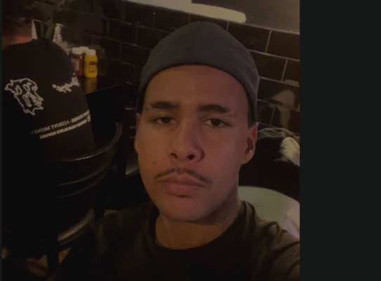
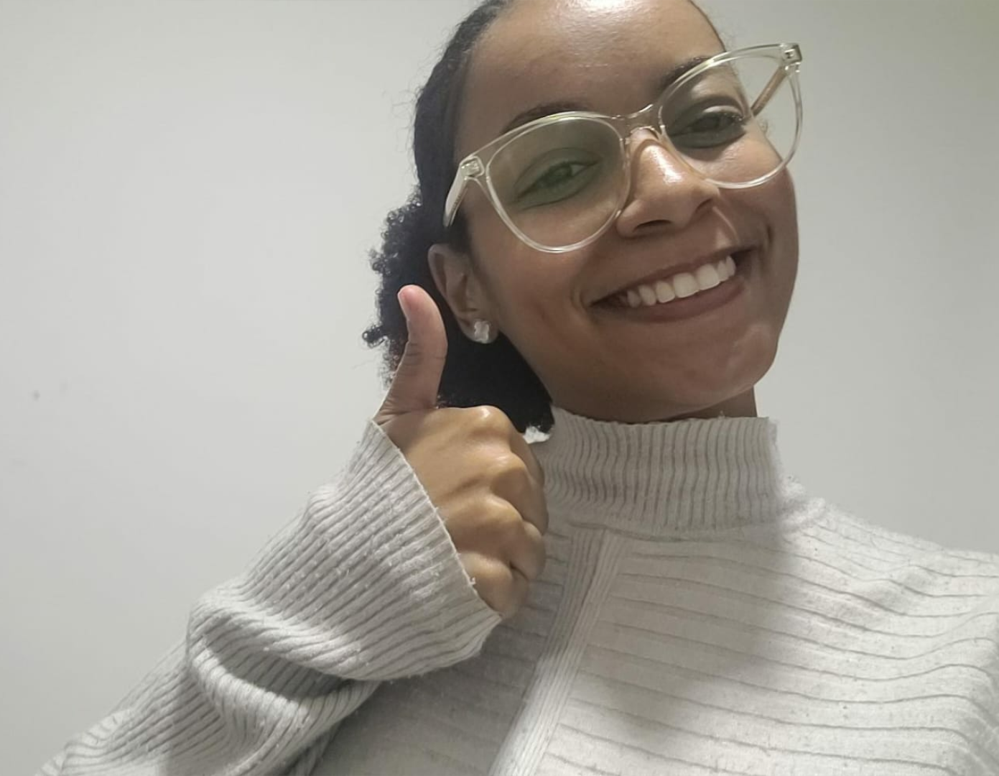
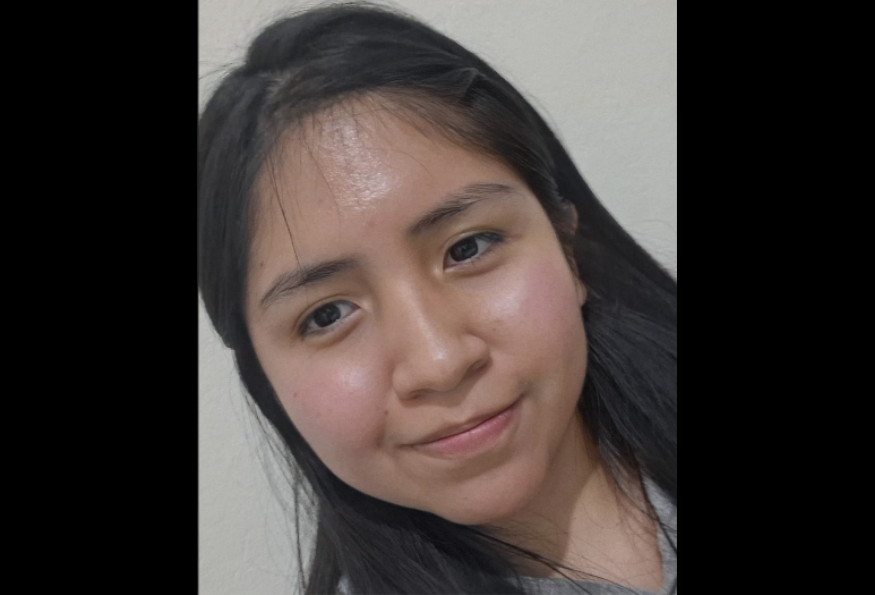
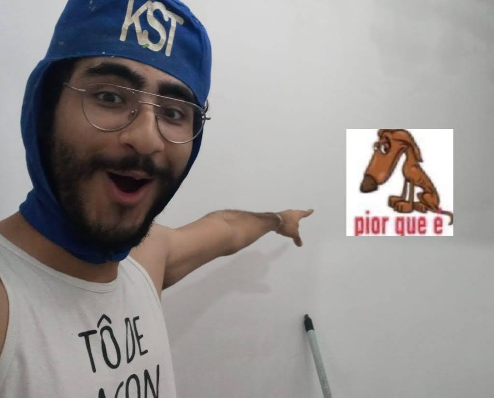
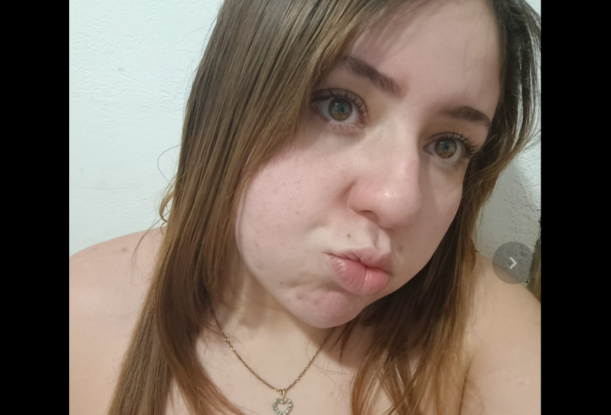
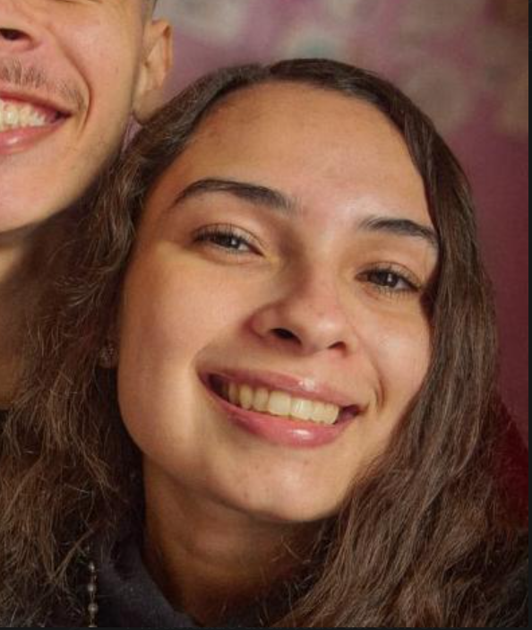

Ai professor, to fazendo esse texto para te lembrar do quão incrível vc é, sei que dias difíceis e cansativos viram, e quando eles vierem, eu espero que sempre ache um lugar no seu coração para se lembrar que tudo na vida é passageiro, os momentos ruins passaram, mas oq vc tem feito aqui, as mentes que está formando, isso será pra sempre nunca nos esqueceremos de nada, e a cada aula que temos levamos um conhecimento que estará presente pra sempre em nossas vidas, está deixando sua marca nas pessoas, sua história me inspirou a sempre seguir em frente, e mesmo que eu te conheça tão pouco, eu tenho orgulho de vc e de todo seu trajeto, temos muita sorte de te ter como professor maninho 😎♥️
- Herbert Richards

Oi professor, passando aqui pra falar que você é muito importante pra gente e que independente do que tenha acontecido, já deu tudo certo. Você além de ser um excelente professor, nos motiva a ser melhor a cada dia, a nos desafiar e superar nossos medos. Obrigada por ser esse professor solista, respeitoso e que a todo momento ajuda todo mundo. Precisando ou não estou por aqui, tamo junto professor! Marchaaa 🤗❤️🩹
- Natalia Santos
Professorzinho Gio, passando só para agradecer por todos os ensinamentos que vocês nos deu durante esse pequeno período. Em tão pouco tempo conseguimos aprender tanta coisa, graças à você.
Você sempre fala para a gente se comparar com o eu de um mês atrás, e, a um mês atrás, eu não imaginaria que eu conseguiria fazer tanta coisa como eu já fiz e faço. Sei que dias difíceis virão, mas dias melhores ainda hão de vir.
Continue sendo esse professor e essa pessoa incrível que você é. Saiba que estamos todos aqui com você e por você. Não somos só uma turma, estamos aqui como família, aliás, não foi você mesmo que disse para a gente nos ajudarmos? Pois é, aprendemos essa lição. O senhor tem o nossos números, sempre que precisar, pode chamar a gente ;)
- Jotapê no auge

Prof eu antes de entrar no curso o medo de aparecer era gigantesco mas com sua dedicação e incentivo hoje em dia consigo aparecer na câmera, ao mesmo tempo também agradeço por todas as aulas que sempre são animadas onde além de aprender teoricamente aprendemos com os erros, antes eu entraria em desespero, mas com sua ajuda estou evoluindo bastante.
Então lembre sempre que para mim também sua história foi uma inspiração eu que não sabia de nada, mas graças aos seus ensinamentos estou persistindo aqui ainda, e sei que seguirei em frente. Agradeço pelo tempo que você entrega para nós em todas as aulas, sou grata por sermos sua primeira turma, desejo-lhe muitas bênçãos e prosperidades para você e sua família ❤️.
Obrigada por fazer parte desta trajetória de aprendizagem e dos conselhos oferecidos para todos nós como jovens✨
- Maria Borda

Fala Professor Giovanni, suaveee?
Muito obrigado por todo o conhecimento e dedicação que você tem para nos ensinar. Desde a primeira, já deu pra ver que sua metodologia é diferenciada, e não é porque você começou a dar aula agora, é porque você tem a empatia de entender o aluno e ensinar exatamente o que ele precisa para progredir, uma qualidade muito única pra quem ensina.
Depois de começar esse curso, eu me livrei de uma trava que eu tinha, comecei a produzir ao invés de consumir. Finalmente consegui fazer o Figma clicar na minha cabeça, e agora finalmente estou usando as técnicas de webdev da etec pra alguma coisa. Só tenho a agradecer ao senhor e a turma.
Deixa a peteca cair não man.
O caba tem que ser muito desenrolado pra ensinar desse jeito, tinha que ser nosso number one, marchaaaaaaa!
- Luis Cordeiro

Professor Gioo, hoje percebemos que você não estava no seu melhor dia, então estamos passando para te lembrar o quanto sua presença importa. Você é chaveee!
Agradecemos muito por todo esforço, por ensinar, apoiar a gente e fazer as aulas serem tão leves e divertidas ♡
Você é um ótimo exemplo para nós e com certeza uma inspiração para muitos continuarem no curso. Inclusive para mim, que no começo achei que talvez não fosse conseguir, mas ouvindo sua história percebi que cada passo que damos todos os dias pode construir algo grande lá na frente. Meu ano começou de uma forma difícil, mas hoje fico muito feliz por estar fazendo esse curso e por ter você como professor. Espero que você também lembre de cuidar de você e que continue sendo essa pessoa que incentiva tantas outras <3
- Adrielly

Se o dia amanheceu cinzento
E o coração perdeu o movimento,
Lembre-se de uma coisa, por favor:
Você carrega dentro de si muita cor.
Nem toda nuvem veio para ficar,
Nem toda tristeza veio para morar.
Assim como a chuva encontra seu fim,
Os momentos difíceis passam, enfim.
Há pessoas que sorriem ao te ver,
Há sonhos esperando acontecer.
E mesmo quando tudo parece confuso,
Você é mais forte do que imagina, eu juro.
Então levante a cabeça devagar,
Permita-se novamente sonhar.
Porque a vida, entre tropeços e emoção,
Sempre guarda um raio de sol para o coração.
E se hoje você conseguir sorrir um pouco,
Já terá transformado o mundo de alguém
talvez o seu próprio.
- Suzana
Ele é um professor incrível (Do fundo do coração)
- Jow Jow, seu aluno favorito

"EVOM - Eu Venci O Mundo" 🤴
- Grande Givas